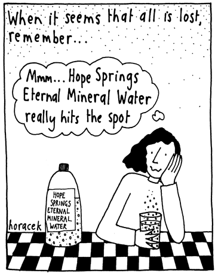

Tim, are you talking with Thom Townsend in GDS on any of this?
We’ve briefly discussed it but not in last few months.
- If we went down this path I would suggest a new element
<org-details>or<org-metadata>containing attributes for all metadata required. This could then be nested under any of the elements using organisation identifiers, including for exampletransaction/receiver-org - This could apply to all organisations, not just government agencies?
For example, a transaction going to a ministry in a country where we don’t have identifiers:
<transaction>
...
<receiver-org type="10">
<narrative>Vanuatu Ministry of Health"</narrative>
<org-details jurisdiction="VU" purpose="07" scope="4">
</receiver-org>
...
</transaction>
- jurisdiction uses Country codes
- purpose uses COFOG codes
- scope uses existing ActivityScope codes
Thoughts?
Is it worth proposing a standard for what metadata lists of identifiers should contain and how it should be accessed?
Another thought
The identifier “VU-07-04” here describes a national health agency in Vanuatu. Although not unique isn’t this a pragmatic solution in itself? It is an organisation prototype, rather than an identifier.
Exactly. My sense is that this ‘prototype’ (nice framing!) Can answer a set
of the questions users might ask without needing unique identification of a
legal entity - so in splitting the description and identification problems
we are able to better address each.
@TimDavies, great to see you’ve put a bunch of thought into this tricky problem. I want to throw a couple of thoughts into the mix.
I like and want to build on @bill_anderson’s point about having a solution in countries where we don’t have a solid list. I think it is unlikely for the foreseeable future for many countries to have solid (complete, up to date, machine-readable) lists of all of their government ministries and agencies, let alone things like sub-national public bodies and individual schools and clinics.
I think we really need a methodology that allows for a way of identifying public bodies even if there isn’t a single authoritative list for that country. I think a good place to start would be budget classifications. A couple of worked examples below.
In Liberia, there are the following codes in the government’s 2016 Chart of Accounts (which is basically the set of classifications used in the budget and financial management systems):
- 101 - National Legislature
- 102 - Ministry of State for Presidential Affairs
- 103 - Office of the Vice President
- 104 - Ministry of Finance
- 105 - Ministry of Internal Affairs
etc. In the Liberian CoA, Departments within Ministries are also identified. This seems like a good place to start. So we could imagine an identifier such as LR-COA-2016-104 referring to the Ministry of Finance (code 104), as identified in the 2016 CoA. Of course CoAs change from time to time (new ministries get created etc.), so it would be good if possible to capture the year of the CoA (or at least a year in which this code definitely existed).
In Bangladesh, this would also work - according to the current Chart of Accounts:
- 01 - Office of the President
- 02 - Parliament
- 03 - Prime Minister’s Office
- 04 - Cabinet Division
etc. So something like BD-COA-2016-02 could refer to Parliament (code 02), as identified in the 2016 CoA.
Come to think of it… these kind of are authoritative lists. Aren’t they?
I think these are two separate points? One is a distributed approach, the second set is a centralised approach. a) is centralised and controlled; b) is centralised but organic
Hey Mark. Thanks for the thoughts on this.
I agree that in some situations Charts of Accounts can provide a possible
source of entity identifiers that could be used in the @ref of an
organisation element ideally alongside the descriptive elements also
discussed in this thread.
The challenge I’ve found when looking at some examples is that Charts of
Accounts or Counterparty IDs often seem to include things that might not be
considered to be distinct entities, so some care might be needed to either
(a) check this before the COA for a given country is added as a recognised
organisatiojln identifier list; or (b) document constraints and caveats of
each COA.
Essentially this comes back to making sure we don’t confuse identifying an
organisation with identifying descriptions that imperfectly overlap the
organisation as when a COA code describes the entities responsible for a
given policy area, rather than uniquely describing the lead entity…
One thing we’ve been thinking about in org-id is whether, as well as having
metadata on organisation in the org-id repo we could also have a library of
helper scripts with some standard interfaces that could help take the
trouble for users our of, for e.g. knowing when LR-COA-2016-104 can be
mapped to LR-COA-2017-104 or not. Though this is definitely something for
future thinking rather than right now…m
If they are published in a consistent place from year to year
I like ??-COA as a prototype registration agency
Hi all,
Most country budgets include the CoA as an annex (or it can be easily worked out from the tables) e.g. see here for Sierra Leone - and where published! these are normally fairly easy to find.
RE overlap, as long as you are taking the administrative classification (Ministries, Agencies, Directorates etc), and staying within one level, I am not sure that there can be any overlap otherwise it would be unclear where the government funds were going. There could be overlap e.g. with two Ministries being under one code on the Functional/Programmatic (e.g. Sector/deliverable) part of the CoA - but this can be avoided by sticking to the Administrative codes.
I have not yet seen a CoA that would identify individual schools, hospitals etc so something else would be needed for that - I suspect a text field with the name would be sufficient in combination with the geographic data also being filled out.
RE CoFOG, several (many?) countries do not have CoFOG aligned to their CoA.
RE local government units - you might need to look into the separate subnational CoA for countries with federal systems to pick these out.
This would be great to see given the continued reluctance of even in-country DPs to report against the national CoA.
Worth noting that humanitarian agencies might not want to use a national CoA to report against out of principle but I presume would then also not be supporting any of the organisations it describes.
Matt
Just to echo Matt - CoAs will contain a range of different sets of classifications, but these are distinct classifications and (though when presented they may be nested into each other) refer to different things. There will maybe be some cases where there is no recognised administrative classification, though there is clearly still some way in which the central budget gives money to Ministry A rather than Ministry B. But generally, these things should exist.
I think my main argument is that it would be much less of a lift to get CoAs published than to get an entirely new set of lists written from scratch. Especially given that CoAs are a core part of government financial management processes, so they have to exist and be maintained. Whereas I am not sure what the incentives would be for developing and maintaining another list.
@bill_anderson - ha, I guess OECD codelists are a good example of this :). CoAs are often not be published on websites probably partly because they’re not considered very interesting to anyone except for a handful of people, most of whom already have access to them anyway. Still: the codes can be referred to even if the source document is not always visible, especially as budget documents will almost always use the same codes.

Would like to go back to the opening post and discuss briefly the case where there is in fact a list.
Tim identified 11 requirements for an identifier system. As some of you may know, but perhaps not all, Canada recently published a machine-readable list of “legal department names and numbers” for all “organization listed in Schedules I, 1.1 and II of the Financial Administration Act authorized to use the Consolidated Revenue Fund”. In other words, the federal ministries and organizations (175 of them).
http://open.canada.ca/data/en/dataset/22090865-f8a6-4b83-9bad-e9d61f26a821
This list does not meets the 11 requirements defined by Tim. For instance, Canada has a federal system so this won’t include all provincial or municipal entities. It also doesn’t provide access to history (though it may in future). But it may still be a useful example to look at, if only to identify what’s wrong and move closer to defining a workable system.
Regarding the recommendations, I’m a bit confused by the notion that the meta-data must be published separately. Shouldn’t the (distant) goal be that all this information available in the individual registers? In which case their separate publication would only be required if they were not included in the register. In practical terms, perhaps at the moment all the meta-data would have to be published separately, but it would be good to be clear on what the long-term vision is, so we know what to work towards.
Thanks Yohanna. The Canada data is a really useful example of the kinds of
lists it would be great to see governments produce and maintain.
On the question of keeping the meta-data only in registries or including in
datasets that refer to the organisations (e.g. IATI datsets) I would
advocate for the redundancy of always including meta-data in the datasets
referring to organisations, and encouraging publication in the registries
or organisation lists that exist. This is on the basis of usability.
I.e.
It removes the need for basic users of the data to dereference and look up
each organisation in a source list (which risks being offline, poorly
formatted or versions out of sync with the dataset) before they can perform
analysis based on organisational meta-data.
But it allows the advanced user to choose to compare entries in the dataset
with information provided in source lists and to use this in preference in
their analysis if the choose.
This keeps the data from being too brittle, whilst maintaining the option
of deferring to authority lists.
Hey Tim
Really early in this post you mentioned a paper coming out at some point. Where are we at on this?
Just going through the discussion again, one of the quite practical issues mentioned was access to CoA - this woudl be required to take Mark’s suggestion (which seem a reasonable one, at least for ADMIN1 entities) forward.
I’m increasingly convinced that CoA should be made available as open data, ideally by a central body that would be able to provide a change log etc. Who should this be: IMF? Which stakeholders might have an interest and could help make it happen (eg INTOSAI? ICGFM?)? How do we launch a lobbying campaign?
1 Like
Hey Yohanna,
The paper has been submitted to DevInit, and just waiting for it to be reviewed.
I definitely agree Chart of Accounts will be useful - but I think it plays more towards identifying functions of government, rather than organizational components (albeit the notion of which parts of government are independent organizations remains a generally tricky one, and one that depends on the perspective from which it is being asked)
As Mark and Matt mentioned, CoA would normally include both function and administrative (ie organizations components), although each CoA may present or nest them differently.
Look forward to seeing the paper.
The paper is now up at http://juds.joinedupdata.org/discussion-papers/paper-7-identifying-government-entities/
@markbrough has questioned whether it addresses the Chart of Accounts question enough.
In summary, my view is that:
- (1) Chart of Account Administrative Divisions may in some cases be the best list of organisation identifiers for government entities in a country - but this is going to be a judgement call on a country-by-country basis, depending on the rules that are applied in maintenance of the CoA, and whether or not it is proactively published and well maintained;
- (2) The org-id.guide methodology already accommodates this, so that in countries where a CoA Administrative Divisions list is published, it’s meta-data can be recorded as part an an entry in the organisation identifier list register, and, in the event it is the best open source for government identifiers in a country (based on the ranking algorithm employed) it would be recommended for use;
- (3) There were no strong examples at the time of writing the paper to show CoAs being used widely as organisation identifier lists;
To operationalise (2) we could certainly improve the research handbook at http://docs.org-id.guide/en/latest/research/ for guidance for researchers on how to find and validate potential CoA sources. Suggestions/pull requests welcome.
Hi @TimDavies, thanks for your response here, and apologies it has taken me a few days to reply.
TL;DR…
I think for public bodies, the publication guidance could be simplified to something like:
For identifying central government public bodies, use the code in the most recent Chart of Accounts; you can also find these codes in the government’s enacted budget documents. You should prefix the code with the country code and
GOV, e.g.TZ-GOV-50for the Ministry of Finance and Planning in Tanzania.
It would also be useful to encourage the publication of these existing codelists in nicer (preferably at least machine-readable forms), in line with @YohannaLoucheur’s suggestion.
Longer response…
So, my frustration was based on the fact that the proposals of the paper do not seem actionable to me, and some of them were discussed a while ago here. In addition, they did not really reflect what I thought was quite a productive discussion at the last IATI TAG. CoA codes exist and we can already start using them, at least to refer to central government bodies.
Responses to your points:
(1) CoA administrative / organisation classifications generally exist for most countries. Even if they are not published in a nice way, they exist and they are a reference framework for core government functions. The codes are generally visible in most budget documents, for example, so even if there is not a nice clean list of all the codes, they are generally possible to find. They have to be maintained in order for government to spend money, so are likely to be an extremely solid point of reference, especially compared to codelists which other government bodies might try and maintain but which cater only to meeting open data objectives.
(2) The org-id.guide methodology kind of works for public bodies but having some specific rules on how you would use CoA codes would be necessary. We talked previously about the fact that CoAs occasionally change (e.g. the 2008 version or the 2015 version, etc.), and codes may be re-used, depending on the country. Having some standard way of constructing these registration lists would be useful. Some research determining whether BD-GOV-2017 is required or just BD-GOV would work (for example) would be really helpful for allowing others to refer to these organisations in a distributed way, even if the entry had not yet been added to org-id.guide (or even if org-id.guide is no longer maintained, for example).
(3) I would take a look at most budget documents where these codes appear to be consistently used – see the IBP budget document library; e.g.:
This was just a quick scan but it every budget I looked at has something similar.
Super happy to help with improving the research handbook but I think it would also be useful to have some general agreement on how to start using these codes which already exist.
1 Like